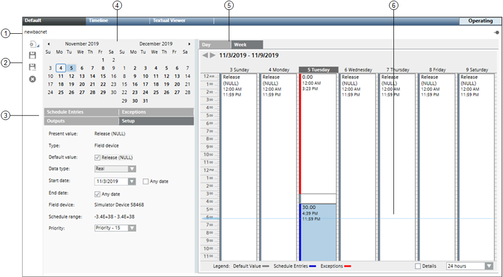
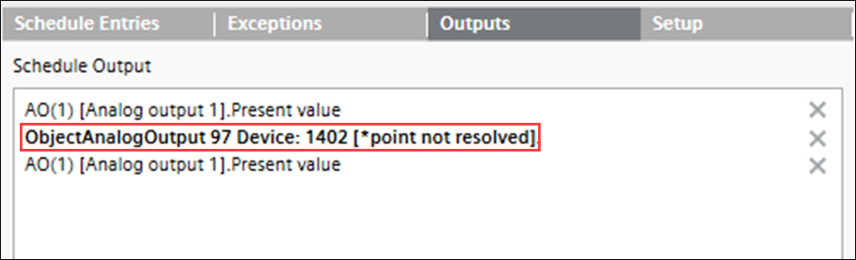
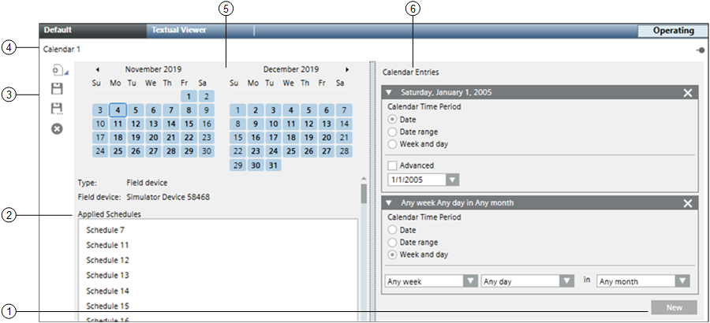
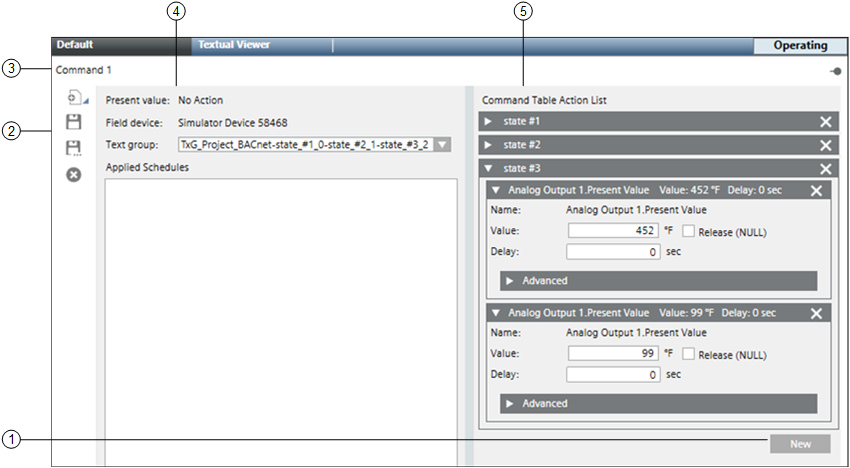

BACnet Schedules
BACnet scheduling is used to automatically command points at prescribed time intervals. You can create daily or weekly schedules for BACnet field panels.
Each BACnet panel stores its own calendar and schedule objects, and a BACnet panel can store and run multiple calendars or schedules at the same time.
Because BACnet schedules reside in and are executed by field panels, they run even if the management station they are associated with is not running.
BACnet schedules handle only BACnet objects (management station schedules can handle both BACnet and non-BACnet object types).
You can also configure commands to control BACnet objects related to your schedules.
For example, you want to create a command that turns lights on and maintains room temperature at 72°F (22.22°C) when the room is occupied.
When the room is unoccupied, the command would turn lights off and maintain the room temperature at 65°F (18.33°C).
In this scenario, you could create a command with an entry for Occupied/Unoccupied, save it, and then drag it from System Browser to a schedule of your choice.
The schedule will determine what time the command executes, the start and end dates, and the frequency of repetition.
BACnet calendars allow you to override a scheduled event. In this sense, you can consider them as exception schedules, consisting of dates only.
When you create a calendar, you can choose specific dates (January 15), a date range (August 1 – 31), or a week and a day you want the exception to run (third week of the month, on Wednesday).
All calendars are associated with a schedule.
If you want to reduce energy costs in your building during company holidays, for example, you could create a holiday calendar.
On these days, your calendar might command the system to reduce the output of heating or cooling systems when the building is unoccupied.
Values are displayed as per value scaled units (if configured).
This section provides the general reference information on BACnet schedules. To get started with workflows and procedures, navigate to the step by step section.
BACnet Schedule Workspace
This section provides an overview of the BACnet Schedule workspace.

| Name | Description |
1 | Schedule Name | Displays the name of the schedule. |
2 | Scheduler Toolbar | Includes the following icons: |
3 | Tabs | Displays four tabs: Schedule Entries, Outputs, Exceptions, and Setup. Schedule Entries: Displays a list of entries for the selected date. Outputs: Outputs are objects associated with the schedule. You can drag-and-drop objects to any tab to add them to the schedule. Dropping them on a tab other than the Outputs tab makes the Outputs tab active. Selecting an object in this section sends data about the object to the Operation and Extended Operation tabs, where you can view additional information about the object and make changes to it. Double-clicking an output makes it the new primary selection. Exceptions: Displays a list of exceptions for the selected date and allows you to set the precedence of the exception, the exception period, and detailed settings for day, month, year, and the recurrence pattern. For calendar exceptions, you can choose a calendar object from a drop-down list. Adding an exception makes the Exceptions tab active. You can create an exception by right-clicking the schedule or by clicking the New button in the Exceptions tab. Setup: Displays common schedule information such as the Present Value of an object, the type of object, the default value for the object, a Release (NULL) check box, and the data type of the schedule outputs for this schedule By default, the system automatically creates weekly schedule entries for the default state, which you can modify. The Release (NULL) check box allows you to bypass the established priority and return an object to its default value. For example, to return control to lower priority commands, check the Release (NULL) check box for the schedule default, and then create a schedule entry with the Default check box checked. This will write BACnet null to the priority slot for the schedule, returning control to the system. Within this tab, you can also select the command priority. The Present Value of some object types is based on a command priority and established in a hierarchy that ranks from highest (1 – Manual Life Safety) to lowest (16 - Available). The hierarchy determines which source has priority over another to change the value of an object. To command one of these object types, you—or an application—must have a command priority equal to or greater than the current command priority of the object. Typically, PPCL is set to priority 16, and schedules are set to priority 15. The schedule range displays a predetermined range for an object type. The first object dropped in the Schedule Output section for that type determines the range that is displayed. For example, for an analog output such as a room temperature set point, you might see a range of 69 – 75 degrees Fahrenheit |
4 | Calendar | Allows you to select a day to view or create schedule entries. When first displayed or refreshed, the current day is selected by default. By default, every new schedule begins with the current date and never ends. Once a new schedule is opened, you can choose the start and end date for the schedule. |
5 | Schedule | When first displayed or refreshed, the current day is selected by default. Day tab: Displays a schedule for the day selected in the Date Picker. Selecting the Detail check box reveals calendar entries, weekly schedule entries, and exception schedule entries. The Day tab also displays a horizontal time bar indicating the current time. Week tab: Displays the weekly schedule. You can click any day of the week to view details. This tab also displays a horizontal time bar indicating the current time. |
6 | Current Time Indicator | Displays a light-blue bar indicating the time of day. |
BACnet Schedule - Outputs tab
In case you are using an Output from other system and/or the Output is not available in the system, then below error message is shown in Schedule Output.

If the Schedule object is marked for validation (enabled, supervised, etc.), the system performs validation check for any modification and logs in audit trail log.
If you see the error message in the Outputs tab as “point not resolved”, then consider that:
- the Output does not belong to that system and that Output is skipped for validation check.
- the validation is enable for Output, then you need to create separate Schedule for system. You must use the Schedule objects that are present in that system only.
For example, you are working on system 1 at Pharma site (for example Schedule 1 and Schedule 2). You have used one Output from system 2 (that is validated and used in Schedule 1 of system 1). You add Output of system 2 to Output tab of system 1 and after execution you receive an error "point not resolved". Perform the following:
- Remove the Output that belongs to system 2.
- Create new Schedule in system 2 and use the object of system 2 only.
BACnet Calendar Workspace
This section provides an overview of the BACnet calendar workspace.

| Name | Description |
1 | New Button | Opens a new calendar entry. |
2 | Applied Schedules | Displays a list of schedules referencing the calendar. Clicking a schedule in this section sends data about the object to either the Operation or Extended Operations tabs. |
3 | Scheduler Toolbar | Includes the following icons: |
4 | Calendar Name | Displays the name of the calendar. |
5 | Date Picker | Displays a monthly calendar with entry dates highlighted. When first displayed or refreshed, the current day is selected by default. |
6 | Calendar Entries | Displays a list of entries representing a specific date, date range, or days of the week. The Advanced check box provides detailed settings for day, month, year, and the recurrence pattern. |
BACnet Command Workspace
This section provides an overview of the BACnet command workspace.

| Name | Description |
1 | New Button | Opens a new command table. |
2 | Scheduler Toolbar | Includes the following icons: |
3 | Command Name | Displays the name of the command. |
4 | Command Attributes | Displays the command object attribute, the panel it is associated with, the text group associated with the object, and the schedules controlling the command. |
5 | Command Table Action List | Displays command tables with additional detail when you select an entry row. The Move Up and Move Down arrows allow you to re-order entries within a command table. Further detail can be displayed by clicking the Advanced button. |

NOTE:
Values are displayed as per value scaled units (if configured). For more information, see Value Scale Units.